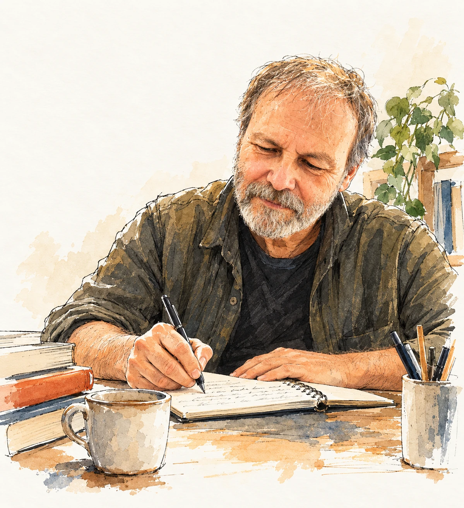

José Poveda | Po
Educador social y autor
Comprender para acompañar
Escribo desde la experiencia, la Educación Social y una pregunta que me acompaña desde hace tiempo: cómo comprender mejor a las personas y la realidad que compartimos para poder acompañarlas sin sustituirlas.

Presentación
Escribir desde la experiencia
Soy José Poveda, aunque Po forma también parte de mi manera de firmar y de contarme. Soy educador social y escribo desde un lugar que conozco bien: la experiencia.
Durante años he acompañado a personas en situaciones muy diferentes y he aprendido que comprender casi nunca significa tener todas las respuestas. A veces significa detenerse, escuchar, dudar de la primera explicación y tratar de mirar la realidad también desde el lugar del otro.
De esa forma de entender la Educación Social, la escritura y la propia vida han ido naciendo distintos proyectos. No fueron pensados como partes de una marca. Cada uno apareció en un momento y respondió a una necesidad diferente. Con el tiempo he descubierto que todos comparten una misma mirada.
Proyectos
Cuatro proyectos, una misma mirada
-
El Diario de Po
Educación Social desde la práctica
Reflexiones, herramientas, casos y propuestas para pensar la intervención socioeducativa. Aquí se encuentran también la Ruta de aprendizaje y el Laboratorio Abierto de Educación Social.
Visitar El Diario de Po → -
Lógica Social
Pensar la realidad social
Un espacio para reflexionar sobre derechos, ciudadanía, compromiso, exclusión y las contradicciones de la sociedad que compartimos.
Visitar Lógica Social → -
Cuando se apagan las luces
Lo que permanece después de la intervención
Relatos y reflexiones nacidos de la experiencia profesional, especialmente de aquello que difícilmente encuentra lugar en informes, expedientes o memorias.
Visitar Cuando se apagan las luces → -
Abuelo Po
Memoria, experiencia y legado
Un espacio donde los recuerdos, los aprendizajes y las preguntas que deja la vida pueden convertirse en algo que compartir con quienes vienen detrás.
Visitar Abuelo Po →
Libros
También escribo libros
-

El diario del Abuelo Po
Una vida contada desde la memoria, pero también desde las preguntas que permanecen. Un relato pensado como legado, donde la experiencia personal dialoga con quienes vienen detrás.
-

Lo que queda cuando se apagan las luces
Una reflexión nacida de la experiencia cotidiana en un centro de protección. Sobre el vínculo, los límites, las contradicciones y aquello que permanece cuando termina nuestra intervención.
-

La conciencia que se construye
Un recorrido personal por una pregunta que me ha acompañado durante buena parte de mi vida: cómo se forma el compromiso social y qué experiencias terminan construyendo nuestra manera de mirar a los demás.
Una idea
Comprender para acompañar
No entiendo acompañar como dirigir la vida de otra persona ni como tener siempre una respuesta preparada. Acompañar exige presencia, escucha y también incertidumbre. Significa intentar comprender antes de decidir qué necesita el otro y aceptar que, muchas veces, nuestra tarea consiste más en caminar al lado que en señalar el camino.
Dónde encontrarme
Contacto
Si quieres escribirme a propósito de alguno de mis proyectos, de la Educación Social o de mi trabajo como autor, puedes hacerlo por correo electrónico.
También puedes seguir lo que voy compartiendo a través de mis distintos proyectos.